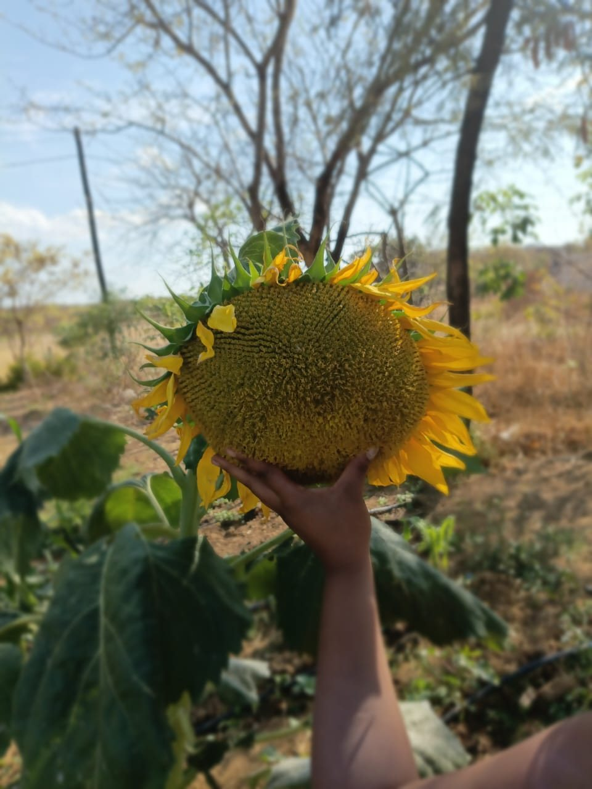
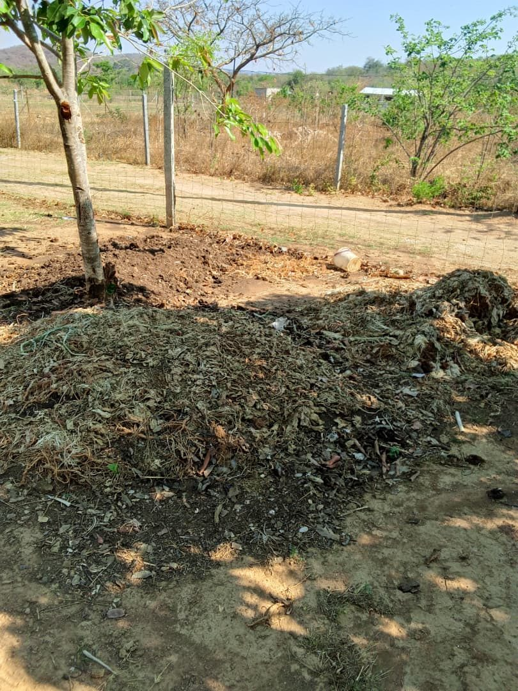
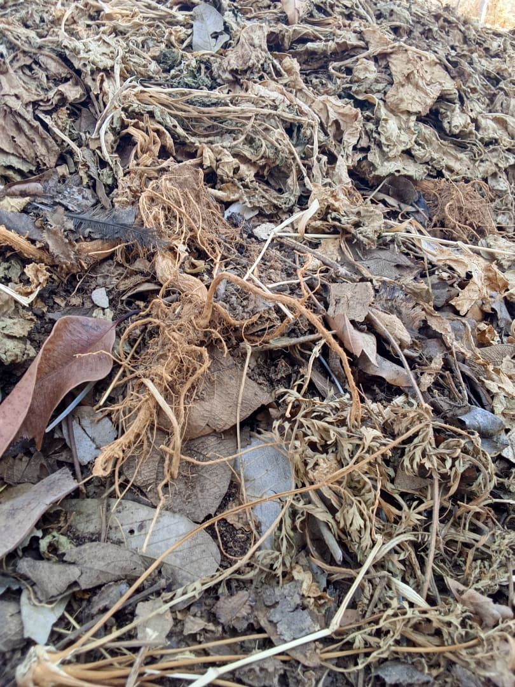
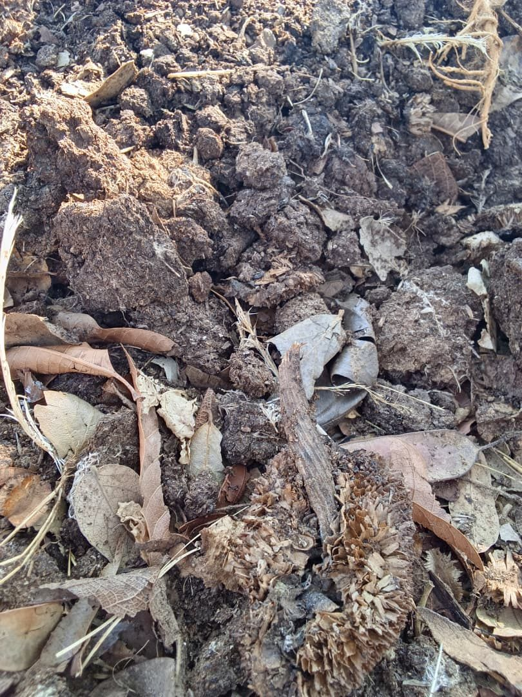

Short updates from the farm and the nursery at Chipongwe, Kafue.
October 2026
First compost demonstration: a sunflower in full bloom
This sunflower was our first demonstration plant for applying nutrients with compost made on the farm. It is part of the scientific gardening techniques we are exploring to improve our organic nutrient solutions.
We make the compost from leaves, grass, wood chips and manure collected from our own chicken coop. The materials are piled in layers and kept wet for several weeks, and the pile is turned once a week.


The compost pile at the farm.

Leaves, grass and plant material in layers.

Manure and leaves breaking down into dark compost.
October 2026
Insansu Nursery is starting up
We have begun raising seedlings in trays at Chipongwe. The nursery will supply our own fields first, and we are looking at how to serve smallholder growers nearby.
October 2026
Drip-irrigated rows at the farm
Our fields at Chipongwe are planted in rows with drip lines delivering water at the roots. It is the same approach we want to bring to smallholder farmers through the Water & Irrigation Hub.
Households, restaurants, lodges and traders in Kafue, Chilanga and Lusaka can now order cabbage, onions, cucumbers, impwa, tomatoes and more straight from the farm. Message us for this week's availability and prices.